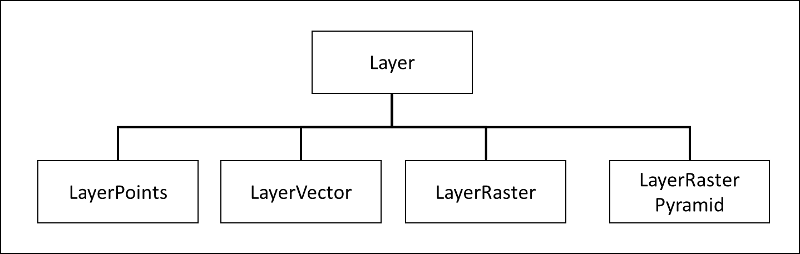

Design Details
Below are some additional details on the design of CanvasMap.
Element Containment
- MAP_HEADER
- TOOL_CONTAINER
- TOOL_EDIT
- TOOL_SELECT
- TOOL_INFO
- CANVAS_CONTAINER
- NAVIGATION
- NORTH_ARROW
- SCALE_BAR
- CANVAS
- LAYER_LIST
- BACKGROUND_LAYERS
- FORGROUND_LAYERS
- MAP_FOOTER
- SRS
- COORDINATES
- COORDINATE_PIXELS
- COORDINATE_REF
- COORDINATE_GEOGRAPHIC
- CREDITS (text string that can include author and date)
The main aggregation hierarchy and the associated "Other Classes" used by CanvasMap.
In its full glory, CanvasMap implements the visualization portion of a full-desktop GIS application. This includes the ability to add, move, and delete layers, show the location of the cursor in various coordinate systems, and show various symbology for spatial data.
The CanvasMap is the top level in the aggregation hierarchy and combines together the scene with a "LayerList", a "Status" panel, and potentially other elements of your design! The CMScene is effectively an array of layers while each layer contains one type of data (points, polylines, polygons, or raster). The CMView takes care of all the drawing into the HTML 5 Canvas element.
The other classes include a class to help with standard Dialogs, a series of "Projectors" for various projections, and a utilities file for everything that is left over.
Inheritance Hierarchy
The inheritance hierarchy is very simple as shown below.

The only inheritance hierarchy besides the one for Layers is for Projectors and there is simple one projector for each projection system and they all inherit from CMProjector.cs.
Current and Future Features
Below is a lsit of the existnig features in features we would like to see in a JavaScript-based web map:
What do we want from a Web-Mapping solution?
- Layer types:
- Point layers:
- Standard marks (circle, squares, triangles, stars)
- Settable styles, can be different for each feature
- Icons from image files
- Settable images, can be different for each feature
- Data from:
- GeoJSON
- Client-side JavaScript
- Polyline and polygon layers:
- Stylize fills and strokes
- Settable for all or individual features
- Mouse over and selected styles
- Settable for all or individual features
- Data from:
- GeoJSON
- Raster layers:
- JPG, PNG
- OpenStreetMap tiles
- Pyramids of tiles
- Vector
- Raster
- All vector layers:
- Override: MouseDown, MouseMove, MouseUp, others?
- Info balloons based on attribute
- Search on attributes -> selection
- View attributes in a table
- All layers:
- Zoom to bounds (if bounds available)
- Conversion of coordinates between geographic and projected systems
- GUI
- Display of the current spatial reference
- Informational windows with HTML content
- Map Panels:
- Title bar
- Tool bar with select and pan tools
- Footer with credits, coordinates, and spatial reference
- Layers panel with access to:
- Settings: fill and stroke style
- Zoom to bounds
- Delete
- Background tile selections
- Easy to replace or remove standard map panels
- Mouse for zoom in/out, pan, and mouse wheel for zooming
- Maps that can flow with HTML content or be resizeable
- Limit zoom levels and visiable area
- Change styles for map elements
- Replace map elements with your own
- Override all existing object functions
- Create new layers and new map elements
Extensions?:
- Correct north arrows
- Correct scale bars
- Graticules
- 3D renderings
- Animations
- More projections
- Raster histograms?
- Editable vector data: points, polylines, polygons (how to make persistent?)
- Labels from attributes?
Alternatives:
- OpenLayers
- Has projections
- CanvasMap
- Supports UTM, Geographic, and GoogleMercator projections
- Leaflet
- Easy to get started